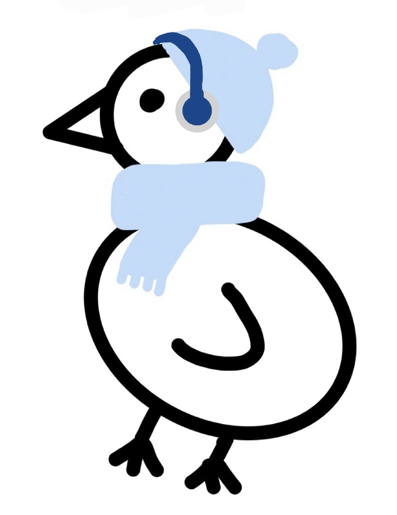

Duckycasts
Abonnierte Podcasts
|
Details zum Podcast
|
Details zur Episode
|
Podcast Anlegen
Suchen
Titel
Abonnierte Podcasts
Formula Theories (with Edön)
- 536 Episodes
Explore Eurovision (with Elyan)
- 896 Episodes
Vampires, Witches and how to dress like them (with Lynn)
- 9746 Episodes
Let's be creative (with James)
- 885 Episodes
I have some Gossip (with Bienchen)
- 946224 Episodes